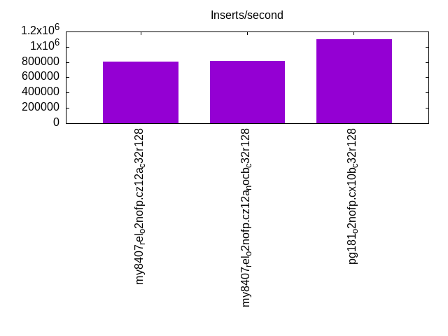
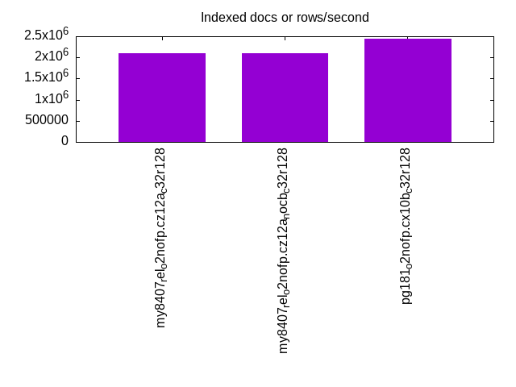
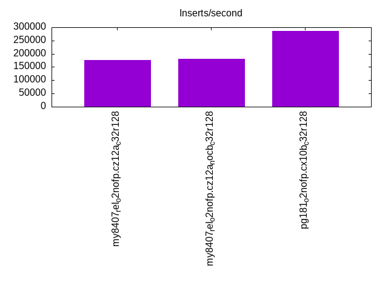
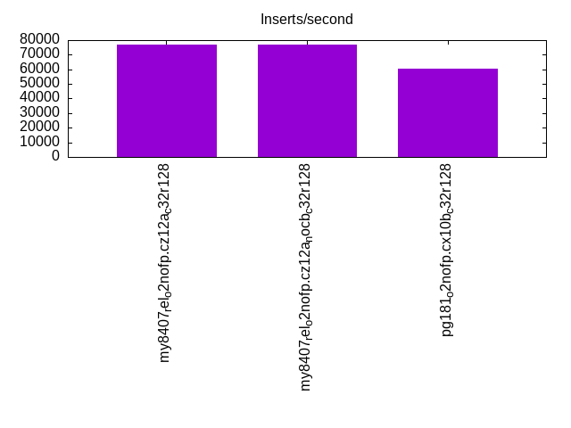
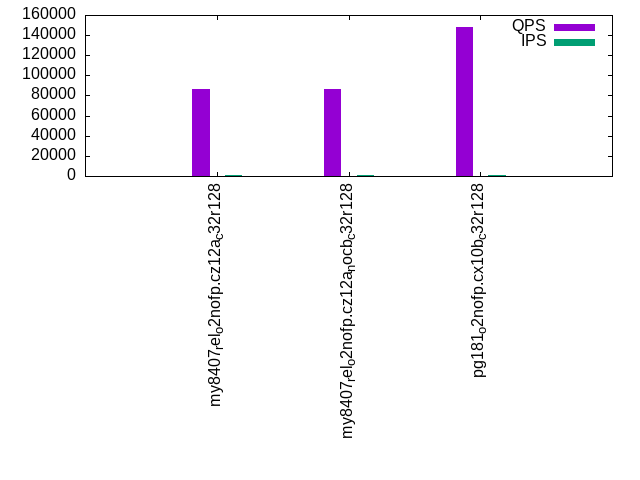
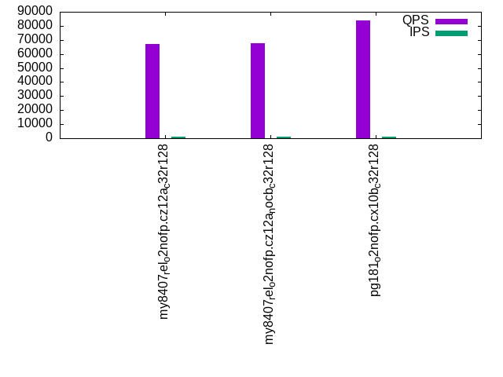
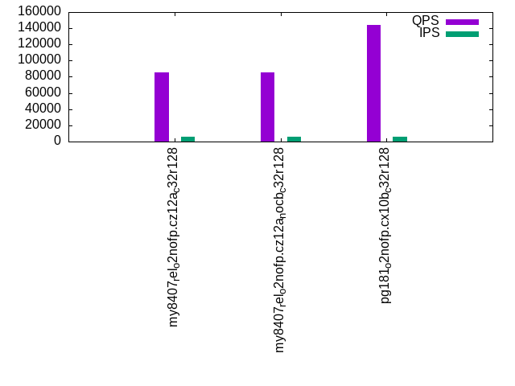
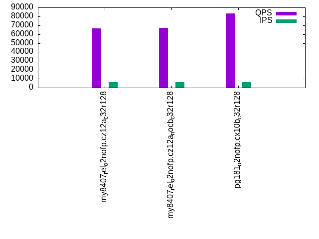
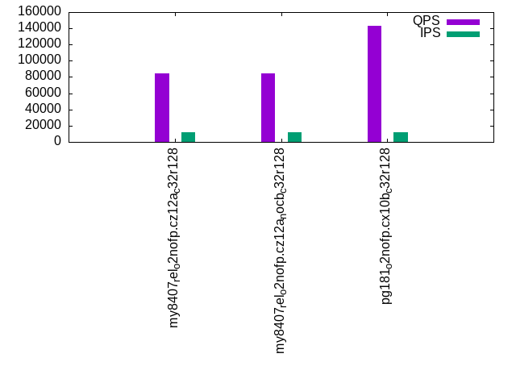
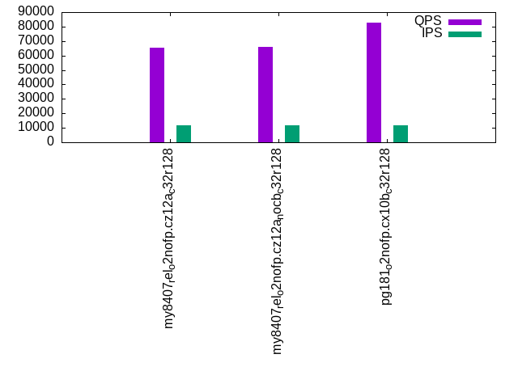

This is a report for the insert benchmark with 120M docs and 12 client(s). It is generated by scripts (bash, awk, sed) and Tufte might not be impressed. An overview of the insert benchmark is here and a short update is here. Below, by DBMS, I mean DBMS+version.config. An example is my8020.c10b40 where my means MySQL, 8020 is version 8.0.20 and c10b40 is the name for the configuration file.
The test server has 32 cores, 128G RAM and 1 NVMe devices. The benchmark was run with 8 clients and there were 1 or 3 connections per client (1 for queries or inserts without rate limits, 1+1 for rate limited inserts+deletes). It uses 8 tables with a table per client. It loads 10M rows per table without secondary indexes, creates 3 secondary indexes per table, then inserts 16m+4m rows per table with a delete per insert to avoid growing the table. It then does 6 read+write tests for 1800s each that do queries as fast as possible with 100,100,500,500,1000,1000 inserts/s and the same for deletes/s per client concurrent with the queries. The database is cached. Clients and the DBMS share one server.
The tested DBMS are:
The numbers are inserts/s for l.i0, l.i1 and l.i2, indexed docs (or rows) /s for l.x and queries/s for qr100, qp100 thru qr1000, qp1000" The values are the average rate over the entire test for inserts (IPS) and queries (QPS). The range of values for IPS and QPS is split into 3 parts: bottom 25%, middle 50%, top 25%. Values in the bottom 25% have a red background, values in the top 25% have a green background and values in the middle have no color. A gray background is used for values that can be ignored because the DBMS did not sustain the target insert rate. Red backgrounds are not used when the minimum value is within 80% of the max value.
| dbms | l.i0 | l.x | l.i1 | l.i2 | qr100 | qp100 | qr500 | qp500 | qr1000 | qp1000 |
|---|---|---|---|---|---|---|---|---|---|---|
| my8407_rel_o2nofp.cz12a_c32r128 | 805369 | 2105265 | 177122 | 77046 | 86349 | 66900 | 85754 | 66270 | 84533 | 65565 |
| my8407_rel_o2nofp.cz12a_nocb_c32r128 | 816326 | 2105265 | 180451 | 77046 | 86367 | 67455 | 85753 | 66856 | 84646 | 66022 |
| pg181_o2nofp.cx10b_c32r128 | 1100917 | 2448982 | 286140 | 60759 | 147902 | 83614 | 144498 | 83212 | 142783 | 82561 |
This table has relative throughput, throughput for the DBMS relative to the DBMS in the first line, using the absolute throughput from the previous table. Values less than 0.95 have a yellow background. Values greater than 1.05 have a blue background.
| dbms | l.i0 | l.x | l.i1 | l.i2 | qr100 | qp100 | qr500 | qp500 | qr1000 | qp1000 |
|---|---|---|---|---|---|---|---|---|---|---|
| my8407_rel_o2nofp.cz12a_c32r128 | 1.00 | 1.00 | 1.00 | 1.00 | 1.00 | 1.00 | 1.00 | 1.00 | 1.00 | 1.00 |
| my8407_rel_o2nofp.cz12a_nocb_c32r128 | 1.01 | 1.00 | 1.02 | 1.00 | 1.00 | 1.01 | 1.00 | 1.01 | 1.00 | 1.01 |
| pg181_o2nofp.cx10b_c32r128 | 1.37 | 1.16 | 1.62 | 0.79 | 1.71 | 1.25 | 1.69 | 1.26 | 1.69 | 1.26 |
This lists the average rate of inserts/s for the tests that do inserts concurrent with queries. For such tests the query rate is listed in the table above. The read+write tests are setup so that the insert rate should match the target rate every second. Cells that are not at least 95% of the target have a red background to indicate a failure to satisfy the target.
| dbms | qr100.L1 | qp100.L2 | qr500.L3 | qp500.L4 | qr1000.L5 | qp1000.L6 |
|---|---|---|---|---|---|---|
| my8407_rel_o2nofp.cz12a_c32r128 | 1193 | 1192 | 5960 | 5964 | 11927 | 11927 |
| my8407_rel_o2nofp.cz12a_nocb_c32r128 | 1193 | 1193 | 5964 | 5960 | 11920 | 11927 |
| pg181_o2nofp.cx10b_c32r128 | 1192 | 1192 | 5964 | 5964 | 11927 | 11927 |
| target | 1200 | 1200 | 6000 | 6000 | 12000 | 12000 |
l.i0: load without secondary indexes. Graphs for performance per 1-second interval are here.
Average throughput:
Insert response time histogram: each cell has the percentage of responses that take <= the time in the header and max is the max response time in seconds. For the max column values in the top 25% of the range have a red background and in the bottom 25% of the range have a green background. The red background is not used when the min value is within 80% of the max value.
| dbms | 256us | 1ms | 4ms | 16ms | 64ms | 256ms | 1s | 4s | 16s | gt | max |
|---|---|---|---|---|---|---|---|---|---|---|---|
| my8407_rel_o2nofp.cz12a_c32r128 | 0.139 | 99.765 | 0.070 | 0.004 | 0.021 | 0.165 | |||||
| my8407_rel_o2nofp.cz12a_nocb_c32r128 | 0.221 | 99.686 | 0.068 | 0.004 | 0.021 | 0.160 | |||||
| pg181_o2nofp.cx10b_c32r128 | 98.914 | 1.082 | 0.004 | 0.005 |
Performance metrics for the DBMS listed above. Some are normalized by throughput, others are not. Legend for results is here.
ips qps rps rmbps wps wmbps rpq rkbpq wpi wkbpi csps cpups cspq cpupq dbgb1 dbgb2 rss maxop p50 p99 tag 805369 0 1 0.0 2672.4 224.1 0.000 0.000 0.003 0.285 136973 46.1 0.170 18 8.0 114.2 16.5 0.165 78091 67591 my8407_rel_o2nofp.cz12a_c32r128 816326 0 1 0.0 2690.5 229.2 0.000 0.000 0.003 0.287 141105 47.2 0.173 19 8.0 114.2 16.5 0.160 78790 66892 my8407_rel_o2nofp.cz12a_nocb_c32r128 1100917 0 2 0.0 3933.7 454.1 0.000 0.000 0.004 0.422 110935 47.3 0.101 14 11.5 31.1 0.2 0.005 112987 106487 pg181_o2nofp.cx10b_c32r128
Average values from iostat.
r/s rkB/s rrqm/s %rrqm r_await rareq-s w/s wkB/s wrqm/s %wrqm w_await wareq-s d/s dkB/s drqm/s %drqm d_await dareq-s f/s f_await aqu-sz %util 0.680 3.120 0.000 0.000 0.575 4.560 2672.4 229528 131.7 6.475 0.674 90.24 1.233 36.35 0.000 0.000 1.028 24.49 23.40 0.485 1.839 9.752 my8407_rel_o2nofp.cz12a_c32r128 0.752 3.421 0.000 0.000 0.492 4.560 2690.5 234663 133.8 6.570 0.676 91.83 1.193 18.92 0.000 0.000 0.885 13.25 23.99 0.488 1.782 9.936 my8407_rel_o2nofp.cz12a_nocb_c32r128 1.663 6.654 0.000 0.000 0.248 3.636 3933.7 465046 500.8 10.99 0.357 117.3 0.590 18.38 0.000 0.000 0.806 17.49 172.6 0.410 1.543 21.75 pg181_o2nofp.cx10b_c32r128
l.x: create secondary indexes.
Average throughput:
Performance metrics for the DBMS listed above. Some are normalized by throughput, others are not. Legend for results is here.
ips qps rps rmbps wps wmbps rpq rkbpq wpi wkbpi csps cpups cspq cpupq dbgb1 dbgb2 rss maxop p50 p99 tag 2105265 0 50 1.3 66028.0 2509.9 0.000 0.001 0.031 1.221 95406 73.8 0.045 11 18.2 124.4 16.9 0.004 NA NA my8407_rel_o2nofp.cz12a_c32r128 2105265 0 54 1.6 65301.5 2498.6 0.000 0.001 0.031 1.215 95937 73.6 0.046 11 18.2 124.4 16.9 0.007 NA NA my8407_rel_o2nofp.cz12a_nocb_c32r128 2448982 0 0 0.0 5406.2 662.4 0.000 0.000 0.002 0.277 16222 23.4 0.007 3 23.1 53.1 7.0 0.033 NA NA pg181_o2nofp.cx10b_c32r128
Average values from iostat.
r/s rkB/s rrqm/s %rrqm r_await rareq-s w/s wkB/s wrqm/s %wrqm w_await wareq-s d/s dkB/s drqm/s %drqm d_await dareq-s f/s f_await aqu-sz %util 49.49 1297.2 0.000 0.000 0.356 26.18 66028.0 2570177 710.2 1.529 0.460 43.80 108.0 354673 0.000 0.000 1.854 2798.4 46.50 0.660 26.04 84.61 my8407_rel_o2nofp.cz12a_c32r128 54.12 1667.3 0.000 0.000 0.396 30.31 65301.5 2558597 712.6 1.525 0.396 44.09 117.9 354767 0.000 0.000 1.731 2617.5 46.89 0.625 21.67 84.59 my8407_rel_o2nofp.cz12a_nocb_c32r128 0.160 0.640 0.000 0.000 0.750 2.400 5406.2 678337 271.2 5.291 0.829 124.9 4.540 35272.4 0.000 0.000 0.963 4519.6 63.54 0.469 4.562 22.80 pg181_o2nofp.cx10b_c32r128
l.i1: continue load after secondary indexes created with 50 inserts per transaction. Graphs for performance per 1-second interval are here.
Average throughput:
Insert response time histogram: each cell has the percentage of responses that take <= the time in the header and max is the max response time in seconds. For the max column values in the top 25% of the range have a red background and in the bottom 25% of the range have a green background. The red background is not used when the min value is within 80% of the max value.
| dbms | 256us | 1ms | 4ms | 16ms | 64ms | 256ms | 1s | 4s | 16s | gt | max |
|---|---|---|---|---|---|---|---|---|---|---|---|
| my8407_rel_o2nofp.cz12a_c32r128 | 88.031 | 11.647 | 0.227 | 0.082 | 0.012 | 0.001 | 2.097 | ||||
| my8407_rel_o2nofp.cz12a_nocb_c32r128 | 88.515 | 11.209 | 0.178 | 0.084 | 0.014 | nonzero | 1.059 | ||||
| pg181_o2nofp.cx10b_c32r128 | 0.805 | 98.611 | 0.245 | 0.238 | 0.066 | 0.035 | 0.675 |
Delete response time histogram: each cell has the percentage of responses that take <= the time in the header and max is the max response time in seconds. For the max column values in the top 25% of the range have a red background and in the bottom 25% of the range have a green background. The red background is not used when the min value is within 80% of the max value.
| dbms | 256us | 1ms | 4ms | 16ms | 64ms | 256ms | 1s | 4s | 16s | gt | max |
|---|---|---|---|---|---|---|---|---|---|---|---|
| my8407_rel_o2nofp.cz12a_c32r128 | 0.007 | 88.343 | 11.335 | 0.214 | 0.088 | 0.013 | 0.001 | 2.038 | |||
| my8407_rel_o2nofp.cz12a_nocb_c32r128 | 0.011 | 88.763 | 10.997 | 0.132 | 0.080 | 0.015 | nonzero | 1.068 | |||
| pg181_o2nofp.cx10b_c32r128 | 23.501 | 75.672 | 0.502 | 0.226 | 0.062 | 0.035 | 0.674 |
Performance metrics for the DBMS listed above. Some are normalized by throughput, others are not. Legend for results is here.
ips qps rps rmbps wps wmbps rpq rkbpq wpi wkbpi csps cpups cspq cpupq dbgb1 dbgb2 rss maxop p50 p99 tag 177122 0 536 8.4 7462.9 327.1 0.003 0.048 0.042 1.891 208813 67.5 1.179 122 31.0 158.6 44.1 2.097 18148 2650 my8407_rel_o2nofp.cz12a_c32r128 180451 0 546 8.5 7518.2 330.0 0.003 0.048 0.042 1.872 211025 67.0 1.169 119 31.0 159.5 44.7 1.059 18548 2850 my8407_rel_o2nofp.cz12a_nocb_c32r128 286140 0 0 0.0 3657.3 409.6 0.000 0.000 0.013 1.466 118065 61.9 0.413 69 33.0 129.1 30.1 0.675 28246 900 pg181_o2nofp.cx10b_c32r128
Average values from iostat.
r/s rkB/s rrqm/s %rrqm r_await rareq-s w/s wkB/s wrqm/s %wrqm w_await wareq-s d/s dkB/s drqm/s %drqm d_await dareq-s f/s f_await aqu-sz %util 536.0 8573.8 0.000 0.000 1.361 10.18 7462.9 334977 89.88 1.162 4.974 45.59 0.649 6741.9 0.000 0.000 1.360 442.6 20.37 1.765 33.54 23.70 my8407_rel_o2nofp.cz12a_c32r128 546.0 8732.9 0.000 0.000 0.919 10.25 7518.2 337879 91.99 1.177 4.644 45.73 0.727 6925.8 0.000 0.000 1.239 485.4 20.32 1.843 32.66 24.80 my8407_rel_o2nofp.cz12a_nocb_c32r128 0.024 0.096 0.000 0.000 0.049 0.418 3657.3 419452 296.3 6.306 5.198 114.5 0.245 535.6 0.000 0.000 1.203 258.9 194.7 1.777 9.704 40.42 pg181_o2nofp.cx10b_c32r128
l.i2: continue load after secondary indexes created with 5 inserts per transaction. Graphs for performance per 1-second interval are here.
Average throughput:
Insert response time histogram: each cell has the percentage of responses that take <= the time in the header and max is the max response time in seconds. For the max column values in the top 25% of the range have a red background and in the bottom 25% of the range have a green background. The red background is not used when the min value is within 80% of the max value.
| dbms | 256us | 1ms | 4ms | 16ms | 64ms | 256ms | 1s | 4s | 16s | gt | max |
|---|---|---|---|---|---|---|---|---|---|---|---|
| my8407_rel_o2nofp.cz12a_c32r128 | 0.011 | 90.832 | 8.466 | 0.671 | 0.011 | 0.007 | 0.001 | 0.530 | |||
| my8407_rel_o2nofp.cz12a_nocb_c32r128 | 0.035 | 91.057 | 8.165 | 0.721 | 0.013 | 0.008 | 0.002 | 0.941 | |||
| pg181_o2nofp.cx10b_c32r128 | 66.195 | 33.801 | 0.003 | nonzero | nonzero | nonzero | 0.095 |
Delete response time histogram: each cell has the percentage of responses that take <= the time in the header and max is the max response time in seconds. For the max column values in the top 25% of the range have a red background and in the bottom 25% of the range have a green background. The red background is not used when the min value is within 80% of the max value.
| dbms | 256us | 1ms | 4ms | 16ms | 64ms | 256ms | 1s | 4s | 16s | gt | max |
|---|---|---|---|---|---|---|---|---|---|---|---|
| my8407_rel_o2nofp.cz12a_c32r128 | 0.016 | 91.464 | 7.870 | 0.632 | 0.010 | 0.007 | 0.002 | 0.541 | |||
| my8407_rel_o2nofp.cz12a_nocb_c32r128 | 0.049 | 91.645 | 7.603 | 0.683 | 0.011 | 0.007 | 0.002 | 0.938 | |||
| pg181_o2nofp.cx10b_c32r128 | 0.013 | 53.814 | 46.172 | 0.001 | nonzero | nonzero | 0.095 |
Performance metrics for the DBMS listed above. Some are normalized by throughput, others are not. Legend for results is here.
ips qps rps rmbps wps wmbps rpq rkbpq wpi wkbpi csps cpups cspq cpupq dbgb1 dbgb2 rss maxop p50 p99 tag 77046 0 0 0.0 5934.3 252.5 0.000 0.000 0.077 3.356 416881 66.8 5.411 277 31.0 166.3 44.1 0.530 7499 1120 my8407_rel_o2nofp.cz12a_c32r128 77046 0 0 0.0 5910.1 252.0 0.000 0.000 0.077 3.350 416948 66.1 5.412 275 31.0 165.7 44.9 0.941 7569 1125 my8407_rel_o2nofp.cz12a_nocb_c32r128 60759 0 0 0.0 570.1 63.3 0.000 0.000 0.009 1.067 241471 52.7 3.974 278 33.2 129.3 25.4 0.095 3929 2415 pg181_o2nofp.cx10b_c32r128
Average values from iostat.
r/s rkB/s rrqm/s %rrqm r_await rareq-s w/s wkB/s wrqm/s %wrqm w_await wareq-s d/s dkB/s drqm/s %drqm d_await dareq-s f/s f_await aqu-sz %util 0.084 0.335 0.000 0.000 0.880 1.226 5934.3 258554 4.721 0.078 4.921 43.58 0.381 3344.7 0.000 0.000 1.141 316.6 12.87 1.972 29.07 15.80 my8407_rel_o2nofp.cz12a_c32r128 0.123 0.490 0.000 0.000 0.892 1.419 5910.1 258082 4.868 0.081 5.165 43.72 0.513 6174.5 0.000 0.000 1.973 766.1 13.00 2.168 30.68 16.16 my8407_rel_o2nofp.cz12a_nocb_c32r128 0.000 0.000 0.000 0.000 0.000 0.000 570.1 64807.8 9.167 1.806 0.378 113.5 0.016 20.58 0.000 0.000 0.043 28.90 41.85 0.557 0.367 6.041 pg181_o2nofp.cx10b_c32r128
qr100.L1: range queries with 100 insert/s per client. Graphs for performance per 1-second interval are here.
Average throughput:
Query response time histogram: each cell has the percentage of responses that take <= the time in the header and max is the max response time in seconds. For max values in the top 25% of the range have a red background and in the bottom 25% of the range have a green background. The red background is not used when the min value is within 80% of the max value.
| dbms | 256us | 1ms | 4ms | 16ms | 64ms | 256ms | 1s | 4s | 16s | gt | max |
|---|---|---|---|---|---|---|---|---|---|---|---|
| my8407_rel_o2nofp.cz12a_c32r128 | 99.988 | 0.012 | nonzero | nonzero | nonzero | nonzero | 0.111 | ||||
| my8407_rel_o2nofp.cz12a_nocb_c32r128 | 99.987 | 0.013 | nonzero | nonzero | 0.004 | ||||||
| pg181_o2nofp.cx10b_c32r128 | 99.999 | 0.001 | nonzero | 0.002 |
Insert response time histogram: each cell has the percentage of responses that take <= the time in the header and max is the max response time in seconds. For max values in the top 25% of the range have a red background and in the bottom 25% of the range have a green background. The red background is not used when the min value is within 80% of the max value.
| dbms | 256us | 1ms | 4ms | 16ms | 64ms | 256ms | 1s | 4s | 16s | gt | max |
|---|---|---|---|---|---|---|---|---|---|---|---|
| my8407_rel_o2nofp.cz12a_c32r128 | 99.181 | 0.743 | 0.037 | 0.039 | 0.152 | ||||||
| my8407_rel_o2nofp.cz12a_nocb_c32r128 | 98.859 | 1.141 | 0.014 | ||||||||
| pg181_o2nofp.cx10b_c32r128 | 99.850 | 0.150 | 0.008 |
Delete response time histogram: each cell has the percentage of responses that take <= the time in the header and max is the max response time in seconds. For max values in the top 25% of the range have a red background and in the bottom 25% of the range have a green background. The red background is not used when the min value is within 80% of the max value.
| dbms | 256us | 1ms | 4ms | 16ms | 64ms | 256ms | 1s | 4s | 16s | gt | max |
|---|---|---|---|---|---|---|---|---|---|---|---|
| my8407_rel_o2nofp.cz12a_c32r128 | 0.005 | 99.255 | 0.678 | 0.032 | 0.030 | 0.168 | |||||
| my8407_rel_o2nofp.cz12a_nocb_c32r128 | 0.021 | 98.926 | 1.051 | 0.002 | 0.017 | ||||||
| pg181_o2nofp.cx10b_c32r128 | 65.512 | 34.488 | 0.004 |
Performance metrics for the DBMS listed above. Some are normalized by throughput, others are not. Legend for results is here.
ips qps rps rmbps wps wmbps rpq rkbpq wpi wkbpi csps cpups cspq cpupq dbgb1 dbgb2 rss maxop p50 p99 tag 1193 86349 0 0.0 1394.3 39.6 0.000 0.000 1.169 33.986 499119 38.8 5.780 144 31.0 166.5 44.1 0.111 7199 7119 my8407_rel_o2nofp.cz12a_c32r128 1193 86367 0 0.0 1333.5 37.9 0.000 0.000 1.118 32.533 499108 39.0 5.779 144 31.0 165.9 44.9 0.004 7279 7199 my8407_rel_o2nofp.cz12a_nocb_c32r128 1192 147902 0 0.0 63.8 5.8 0.000 0.000 0.054 4.960 565245 37.3 3.822 81 33.2 129.3 0.5 0.002 12510 12270 pg181_o2nofp.cx10b_c32r128
Average values from iostat.
r/s rkB/s rrqm/s %rrqm r_await rareq-s w/s wkB/s wrqm/s %wrqm w_await wareq-s d/s dkB/s drqm/s %drqm d_await dareq-s f/s f_await aqu-sz %util 0.000 0.000 0.000 0.000 0.000 0.000 1394.3 40534.5 1.341 0.377 0.598 30.91 0.011 0.137 0.000 0.000 0.065 0.409 2.318 0.566 1.216 6.236 my8407_rel_o2nofp.cz12a_c32r128 0.002 0.007 0.000 0.000 0.017 0.033 1333.5 38802.0 1.375 0.431 0.613 31.19 0.024 0.095 0.000 0.000 0.139 0.453 2.168 0.639 0.978 9.892 my8407_rel_o2nofp.cz12a_nocb_c32r128 0.000 0.000 0.000 0.000 0.000 0.000 63.80 5912.4 0.739 1.430 1.399 90.28 0.001 0.002 0.000 0.000 0.003 0.011 7.246 0.633 0.071 1.992 pg181_o2nofp.cx10b_c32r128
qp100.L2: point queries with 100 insert/s per client. Graphs for performance per 1-second interval are here.
Average throughput:
Query response time histogram: each cell has the percentage of responses that take <= the time in the header and max is the max response time in seconds. For max values in the top 25% of the range have a red background and in the bottom 25% of the range have a green background. The red background is not used when the min value is within 80% of the max value.
| dbms | 256us | 1ms | 4ms | 16ms | 64ms | 256ms | 1s | 4s | 16s | gt | max |
|---|---|---|---|---|---|---|---|---|---|---|---|
| my8407_rel_o2nofp.cz12a_c32r128 | 99.958 | 0.042 | nonzero | nonzero | 0.004 | ||||||
| my8407_rel_o2nofp.cz12a_nocb_c32r128 | 99.961 | 0.039 | nonzero | 0.003 | |||||||
| pg181_o2nofp.cx10b_c32r128 | 99.992 | 0.008 | nonzero | 0.002 |
Insert response time histogram: each cell has the percentage of responses that take <= the time in the header and max is the max response time in seconds. For max values in the top 25% of the range have a red background and in the bottom 25% of the range have a green background. The red background is not used when the min value is within 80% of the max value.
| dbms | 256us | 1ms | 4ms | 16ms | 64ms | 256ms | 1s | 4s | 16s | gt | max |
|---|---|---|---|---|---|---|---|---|---|---|---|
| my8407_rel_o2nofp.cz12a_c32r128 | 99.123 | 0.877 | 0.016 | ||||||||
| my8407_rel_o2nofp.cz12a_nocb_c32r128 | 99.988 | 0.012 | 0.012 | ||||||||
| pg181_o2nofp.cx10b_c32r128 | 99.875 | 0.125 | 0.008 |
Delete response time histogram: each cell has the percentage of responses that take <= the time in the header and max is the max response time in seconds. For max values in the top 25% of the range have a red background and in the bottom 25% of the range have a green background. The red background is not used when the min value is within 80% of the max value.
| dbms | 256us | 1ms | 4ms | 16ms | 64ms | 256ms | 1s | 4s | 16s | gt | max |
|---|---|---|---|---|---|---|---|---|---|---|---|
| my8407_rel_o2nofp.cz12a_c32r128 | 99.132 | 0.868 | 0.013 | ||||||||
| my8407_rel_o2nofp.cz12a_nocb_c32r128 | 99.993 | 0.007 | 0.014 | ||||||||
| pg181_o2nofp.cx10b_c32r128 | 13.699 | 86.273 | 0.028 | 0.008 |
Performance metrics for the DBMS listed above. Some are normalized by throughput, others are not. Legend for results is here.
ips qps rps rmbps wps wmbps rpq rkbpq wpi wkbpi csps cpups cspq cpupq dbgb1 dbgb2 rss maxop p50 p99 tag 1192 66900 0 0.0 127.5 4.4 0.000 0.000 0.107 3.773 389156 38.0 5.817 182 31.0 166.7 44.1 0.004 5599 5551 my8407_rel_o2nofp.cz12a_c32r128 1193 67455 0 0.0 135.0 4.6 0.000 0.000 0.113 3.962 392267 38.5 5.815 183 31.0 166.2 44.9 0.003 5663 5599 my8407_rel_o2nofp.cz12a_nocb_c32r128 1192 83614 0 0.0 165.1 10.7 0.000 0.000 0.138 9.216 323278 36.9 3.866 141 33.2 128.5 0.5 0.002 7071 6927 pg181_o2nofp.cx10b_c32r128
Average values from iostat.
r/s rkB/s rrqm/s %rrqm r_await rareq-s w/s wkB/s wrqm/s %wrqm w_await wareq-s d/s dkB/s drqm/s %drqm d_await dareq-s f/s f_await aqu-sz %util 0.001 0.002 0.000 0.000 0.008 0.011 127.5 4497.3 1.378 1.081 0.461 35.30 0.010 0.042 0.000 0.000 0.047 0.188 2.036 0.770 0.062 2.138 my8407_rel_o2nofp.cz12a_c32r128 0.001 0.004 0.000 0.000 0.011 0.022 135.0 4725.5 1.351 1.004 0.344 35.02 0.011 0.044 0.000 0.000 0.046 0.188 2.433 0.502 0.048 10.83 my8407_rel_o2nofp.cz12a_nocb_c32r128 0.000 0.000 0.000 0.000 0.000 0.000 165.1 10985.8 3.692 2.575 0.343 68.13 0.033 470.9 0.000 0.000 0.006 39.92 6.992 0.537 0.032 1.207 pg181_o2nofp.cx10b_c32r128
qr500.L3: range queries with 500 insert/s per client. Graphs for performance per 1-second interval are here.
Average throughput:
Query response time histogram: each cell has the percentage of responses that take <= the time in the header and max is the max response time in seconds. For max values in the top 25% of the range have a red background and in the bottom 25% of the range have a green background. The red background is not used when the min value is within 80% of the max value.
| dbms | 256us | 1ms | 4ms | 16ms | 64ms | 256ms | 1s | 4s | 16s | gt | max |
|---|---|---|---|---|---|---|---|---|---|---|---|
| my8407_rel_o2nofp.cz12a_c32r128 | 99.974 | 0.026 | nonzero | 0.004 | |||||||
| my8407_rel_o2nofp.cz12a_nocb_c32r128 | 99.975 | 0.025 | nonzero | 0.003 | |||||||
| pg181_o2nofp.cx10b_c32r128 | 99.995 | 0.004 | nonzero | nonzero | nonzero | 0.019 |
Insert response time histogram: each cell has the percentage of responses that take <= the time in the header and max is the max response time in seconds. For max values in the top 25% of the range have a red background and in the bottom 25% of the range have a green background. The red background is not used when the min value is within 80% of the max value.
| dbms | 256us | 1ms | 4ms | 16ms | 64ms | 256ms | 1s | 4s | 16s | gt | max |
|---|---|---|---|---|---|---|---|---|---|---|---|
| my8407_rel_o2nofp.cz12a_c32r128 | 99.623 | 0.372 | 0.005 | 0.021 | |||||||
| my8407_rel_o2nofp.cz12a_nocb_c32r128 | 99.662 | 0.334 | 0.003 | 0.020 | |||||||
| pg181_o2nofp.cx10b_c32r128 | 0.269 | 98.617 | 0.956 | 0.159 | 0.041 |
Delete response time histogram: each cell has the percentage of responses that take <= the time in the header and max is the max response time in seconds. For max values in the top 25% of the range have a red background and in the bottom 25% of the range have a green background. The red background is not used when the min value is within 80% of the max value.
| dbms | 256us | 1ms | 4ms | 16ms | 64ms | 256ms | 1s | 4s | 16s | gt | max |
|---|---|---|---|---|---|---|---|---|---|---|---|
| my8407_rel_o2nofp.cz12a_c32r128 | 99.732 | 0.265 | 0.003 | 0.019 | |||||||
| my8407_rel_o2nofp.cz12a_nocb_c32r128 | 0.006 | 99.759 | 0.232 | 0.002 | 0.019 | ||||||
| pg181_o2nofp.cx10b_c32r128 | 47.769 | 51.531 | 0.617 | 0.082 | 0.023 |
Performance metrics for the DBMS listed above. Some are normalized by throughput, others are not. Legend for results is here.
ips qps rps rmbps wps wmbps rpq rkbpq wpi wkbpi csps cpups cspq cpupq dbgb1 dbgb2 rss maxop p50 p99 tag 5960 85754 0 0.0 567.3 20.8 0.000 0.000 0.095 3.570 495664 40.8 5.780 152 31.0 167.8 44.1 0.004 7183 7119 my8407_rel_o2nofp.cz12a_c32r128 5964 85753 0 0.0 565.1 20.7 0.000 0.000 0.095 3.553 495830 40.8 5.782 152 31.0 167.2 44.9 0.003 7183 7119 my8407_rel_o2nofp.cz12a_nocb_c32r128 5964 144498 0 0.0 266.9 15.7 0.000 0.000 0.045 2.691 552566 38.5 3.824 85 33.3 121.1 0.4 0.019 12079 11662 pg181_o2nofp.cx10b_c32r128
Average values from iostat.
r/s rkB/s rrqm/s %rrqm r_await rareq-s w/s wkB/s wrqm/s %wrqm w_await wareq-s d/s dkB/s drqm/s %drqm d_await dareq-s f/s f_await aqu-sz %util 0.003 0.013 0.000 0.000 0.010 0.055 567.3 21276.6 1.522 0.337 1.119 39.80 0.059 2.276 0.000 0.000 0.286 5.702 2.540 0.848 0.606 2.317 my8407_rel_o2nofp.cz12a_c32r128 0.006 0.022 0.000 0.000 0.022 0.099 565.1 21186.6 1.506 0.333 0.931 39.69 0.076 5.635 0.000 0.000 0.196 6.275 2.607 0.684 0.601 1.566 my8407_rel_o2nofp.cz12a_nocb_c32r128 0.000 0.000 0.000 0.000 0.000 0.000 266.9 16048.4 5.944 2.084 0.311 61.29 0.291 4317.9 0.000 0.000 0.005 81.70 9.268 0.528 0.069 1.688 pg181_o2nofp.cx10b_c32r128
qp500.L4: point queries with 500 insert/s per client. Graphs for performance per 1-second interval are here.
Average throughput:
Query response time histogram: each cell has the percentage of responses that take <= the time in the header and max is the max response time in seconds. For max values in the top 25% of the range have a red background and in the bottom 25% of the range have a green background. The red background is not used when the min value is within 80% of the max value.
| dbms | 256us | 1ms | 4ms | 16ms | 64ms | 256ms | 1s | 4s | 16s | gt | max |
|---|---|---|---|---|---|---|---|---|---|---|---|
| my8407_rel_o2nofp.cz12a_c32r128 | 99.856 | 0.143 | nonzero | 0.002 | |||||||
| my8407_rel_o2nofp.cz12a_nocb_c32r128 | 99.863 | 0.136 | nonzero | 0.003 | |||||||
| pg181_o2nofp.cx10b_c32r128 | 99.979 | 0.021 | nonzero | nonzero | nonzero | nonzero | 0.243 |
Insert response time histogram: each cell has the percentage of responses that take <= the time in the header and max is the max response time in seconds. For max values in the top 25% of the range have a red background and in the bottom 25% of the range have a green background. The red background is not used when the min value is within 80% of the max value.
| dbms | 256us | 1ms | 4ms | 16ms | 64ms | 256ms | 1s | 4s | 16s | gt | max |
|---|---|---|---|---|---|---|---|---|---|---|---|
| my8407_rel_o2nofp.cz12a_c32r128 | 99.894 | 0.104 | 0.003 | 0.023 | |||||||
| my8407_rel_o2nofp.cz12a_nocb_c32r128 | 99.753 | 0.241 | 0.006 | 0.023 | |||||||
| pg181_o2nofp.cx10b_c32r128 | 0.114 | 99.072 | 0.601 | 0.132 | 0.081 | 0.239 |
Delete response time histogram: each cell has the percentage of responses that take <= the time in the header and max is the max response time in seconds. For max values in the top 25% of the range have a red background and in the bottom 25% of the range have a green background. The red background is not used when the min value is within 80% of the max value.
| dbms | 256us | 1ms | 4ms | 16ms | 64ms | 256ms | 1s | 4s | 16s | gt | max |
|---|---|---|---|---|---|---|---|---|---|---|---|
| my8407_rel_o2nofp.cz12a_c32r128 | 99.927 | 0.069 | 0.004 | 0.026 | |||||||
| my8407_rel_o2nofp.cz12a_nocb_c32r128 | 99.855 | 0.140 | 0.005 | 0.025 | |||||||
| pg181_o2nofp.cx10b_c32r128 | 42.500 | 57.010 | 0.368 | 0.063 | 0.059 | 0.214 |
Performance metrics for the DBMS listed above. Some are normalized by throughput, others are not. Legend for results is here.
ips qps rps rmbps wps wmbps rpq rkbpq wpi wkbpi csps cpups cspq cpupq dbgb1 dbgb2 rss maxop p50 p99 tag 5964 66270 0 0.0 625.6 22.4 0.000 0.000 0.105 3.847 388866 39.5 5.868 191 31.0 168.9 44.1 0.002 5551 5487 my8407_rel_o2nofp.cz12a_c32r128 5960 66856 0 0.0 632.2 22.6 0.000 0.000 0.106 3.884 392473 39.9 5.870 191 31.0 168.3 44.9 0.003 5599 5551 my8407_rel_o2nofp.cz12a_nocb_c32r128 5964 83212 0 0.0 167.8 16.5 0.000 0.000 0.028 2.839 322605 37.6 3.877 145 33.4 114.7 0.4 0.243 6895 6735 pg181_o2nofp.cx10b_c32r128
Average values from iostat.
r/s rkB/s rrqm/s %rrqm r_await rareq-s w/s wkB/s wrqm/s %wrqm w_await wareq-s d/s dkB/s drqm/s %drqm d_await dareq-s f/s f_await aqu-sz %util 0.004 0.018 0.000 0.000 0.017 0.077 625.6 22941.4 1.685 0.288 0.622 37.32 0.050 1.752 0.000 0.000 0.152 4.250 2.512 0.534 0.392 2.964 my8407_rel_o2nofp.cz12a_c32r128 0.003 0.011 0.000 0.000 0.015 0.044 632.2 23150.7 1.632 0.277 0.737 37.27 0.081 6.895 0.000 0.000 0.227 8.698 2.536 0.643 0.480 2.717 my8407_rel_o2nofp.cz12a_nocb_c32r128 0.000 0.000 0.000 0.000 0.000 0.000 167.8 16929.5 6.286 2.609 0.701 101.0 0.256 3738.8 0.000 0.000 0.014 41.44 9.094 0.648 0.177 2.028 pg181_o2nofp.cx10b_c32r128
qr1000.L5: range queries with 1000 insert/s per client. Graphs for performance per 1-second interval are here.
Average throughput:
Query response time histogram: each cell has the percentage of responses that take <= the time in the header and max is the max response time in seconds. For max values in the top 25% of the range have a red background and in the bottom 25% of the range have a green background. The red background is not used when the min value is within 80% of the max value.
| dbms | 256us | 1ms | 4ms | 16ms | 64ms | 256ms | 1s | 4s | 16s | gt | max |
|---|---|---|---|---|---|---|---|---|---|---|---|
| my8407_rel_o2nofp.cz12a_c32r128 | 99.935 | 0.064 | 0.001 | nonzero | 0.007 | ||||||
| my8407_rel_o2nofp.cz12a_nocb_c32r128 | 99.929 | 0.069 | 0.002 | nonzero | nonzero | nonzero | 0.166 | ||||
| pg181_o2nofp.cx10b_c32r128 | 99.992 | 0.007 | nonzero | nonzero | nonzero | nonzero | 0.177 |
Insert response time histogram: each cell has the percentage of responses that take <= the time in the header and max is the max response time in seconds. For max values in the top 25% of the range have a red background and in the bottom 25% of the range have a green background. The red background is not used when the min value is within 80% of the max value.
| dbms | 256us | 1ms | 4ms | 16ms | 64ms | 256ms | 1s | 4s | 16s | gt | max |
|---|---|---|---|---|---|---|---|---|---|---|---|
| my8407_rel_o2nofp.cz12a_c32r128 | 99.507 | 0.481 | 0.011 | nonzero | 0.066 | ||||||
| my8407_rel_o2nofp.cz12a_nocb_c32r128 | 99.344 | 0.549 | 0.061 | 0.047 | 0.199 | ||||||
| pg181_o2nofp.cx10b_c32r128 | 0.945 | 98.506 | 0.442 | 0.107 | nonzero | 0.134 |
Delete response time histogram: each cell has the percentage of responses that take <= the time in the header and max is the max response time in seconds. For max values in the top 25% of the range have a red background and in the bottom 25% of the range have a green background. The red background is not used when the min value is within 80% of the max value.
| dbms | 256us | 1ms | 4ms | 16ms | 64ms | 256ms | 1s | 4s | 16s | gt | max |
|---|---|---|---|---|---|---|---|---|---|---|---|
| my8407_rel_o2nofp.cz12a_c32r128 | nonzero | 99.751 | 0.240 | 0.009 | 0.056 | ||||||
| my8407_rel_o2nofp.cz12a_nocb_c32r128 | 0.010 | 99.563 | 0.342 | 0.048 | 0.037 | 0.194 | |||||
| pg181_o2nofp.cx10b_c32r128 | 38.004 | 61.616 | 0.316 | 0.064 | nonzero | 0.133 |
Performance metrics for the DBMS listed above. Some are normalized by throughput, others are not. Legend for results is here.
ips qps rps rmbps wps wmbps rpq rkbpq wpi wkbpi csps cpups cspq cpupq dbgb1 dbgb2 rss maxop p50 p99 tag 11927 84533 0 0.0 1022.5 38.8 0.000 0.000 0.086 3.329 490053 42.7 5.797 162 31.0 171.0 44.1 0.007 7087 7023 my8407_rel_o2nofp.cz12a_c32r128 11920 84646 0 0.0 1025.4 38.8 0.000 0.000 0.086 3.336 491290 42.7 5.804 161 31.0 170.4 44.9 0.166 7135 6959 my8407_rel_o2nofp.cz12a_nocb_c32r128 11927 142783 0 0.0 208.9 21.3 0.000 0.000 0.018 1.831 546000 39.8 3.824 89 33.4 109.5 0.5 0.177 11951 11295 pg181_o2nofp.cx10b_c32r128
Average values from iostat.
r/s rkB/s rrqm/s %rrqm r_await rareq-s w/s wkB/s wrqm/s %wrqm w_await wareq-s d/s dkB/s drqm/s %drqm d_await dareq-s f/s f_await aqu-sz %util 0.005 0.020 0.000 0.000 0.054 0.088 1022.5 39704.8 1.803 0.179 1.192 39.00 0.072 3.308 0.000 0.000 0.264 6.807 2.831 0.782 1.153 1.890 my8407_rel_o2nofp.cz12a_c32r128 0.008 0.031 0.000 0.000 0.028 0.155 1025.4 39765.9 1.784 0.179 1.193 38.95 0.099 7.882 0.000 0.000 0.386 8.636 3.647 0.946 1.268 2.470 my8407_rel_o2nofp.cz12a_nocb_c32r128 0.001 0.004 0.000 0.000 0.000 0.011 208.9 21835.0 6.996 2.710 0.338 104.2 0.217 3086.2 0.000 0.000 0.088 54.11 13.37 0.549 0.078 2.161 pg181_o2nofp.cx10b_c32r128
qp1000.L6: point queries with 1000 insert/s per client. Graphs for performance per 1-second interval are here.
Average throughput:
Query response time histogram: each cell has the percentage of responses that take <= the time in the header and max is the max response time in seconds. For max values in the top 25% of the range have a red background and in the bottom 25% of the range have a green background. The red background is not used when the min value is within 80% of the max value.
| dbms | 256us | 1ms | 4ms | 16ms | 64ms | 256ms | 1s | 4s | 16s | gt | max |
|---|---|---|---|---|---|---|---|---|---|---|---|
| my8407_rel_o2nofp.cz12a_c32r128 | 99.662 | 0.336 | 0.002 | nonzero | 0.009 | ||||||
| my8407_rel_o2nofp.cz12a_nocb_c32r128 | 99.676 | 0.322 | 0.002 | nonzero | 0.005 | ||||||
| pg181_o2nofp.cx10b_c32r128 | 99.954 | 0.045 | nonzero | nonzero | nonzero | nonzero | 0.119 |
Insert response time histogram: each cell has the percentage of responses that take <= the time in the header and max is the max response time in seconds. For max values in the top 25% of the range have a red background and in the bottom 25% of the range have a green background. The red background is not used when the min value is within 80% of the max value.
| dbms | 256us | 1ms | 4ms | 16ms | 64ms | 256ms | 1s | 4s | 16s | gt | max |
|---|---|---|---|---|---|---|---|---|---|---|---|
| my8407_rel_o2nofp.cz12a_c32r128 | 99.611 | 0.376 | 0.013 | nonzero | 0.072 | ||||||
| my8407_rel_o2nofp.cz12a_nocb_c32r128 | 99.340 | 0.651 | 0.009 | nonzero | 0.065 | ||||||
| pg181_o2nofp.cx10b_c32r128 | 0.578 | 98.895 | 0.415 | 0.112 | 0.040 |
Delete response time histogram: each cell has the percentage of responses that take <= the time in the header and max is the max response time in seconds. For max values in the top 25% of the range have a red background and in the bottom 25% of the range have a green background. The red background is not used when the min value is within 80% of the max value.
| dbms | 256us | 1ms | 4ms | 16ms | 64ms | 256ms | 1s | 4s | 16s | gt | max |
|---|---|---|---|---|---|---|---|---|---|---|---|
| my8407_rel_o2nofp.cz12a_c32r128 | nonzero | 99.814 | 0.175 | 0.010 | 0.058 | ||||||
| my8407_rel_o2nofp.cz12a_nocb_c32r128 | 0.001 | 99.631 | 0.360 | 0.007 | nonzero | 0.064 | |||||
| pg181_o2nofp.cx10b_c32r128 | 39.789 | 59.755 | 0.385 | 0.071 | 0.039 |
Performance metrics for the DBMS listed above. Some are normalized by throughput, others are not. Legend for results is here.
ips qps rps rmbps wps wmbps rpq rkbpq wpi wkbpi csps cpups cspq cpupq dbgb1 dbgb2 rss maxop p50 p99 tag 11927 65565 0 0.0 1083.9 40.6 0.000 0.000 0.091 3.482 387497 42.7 5.910 208 31.0 173.1 44.1 0.009 5487 5423 my8407_rel_o2nofp.cz12a_c32r128 11927 66022 0 0.0 1084.6 40.5 0.000 0.000 0.091 3.478 389416 42.4 5.898 206 31.0 172.5 44.9 0.005 5519 5471 my8407_rel_o2nofp.cz12a_nocb_c32r128 11927 82561 0 0.0 202.2 21.0 0.000 0.000 0.017 1.804 320836 38.9 3.886 151 33.2 105.7 13.6 0.119 6943 6717 pg181_o2nofp.cx10b_c32r128
Average values from iostat.
r/s rkB/s rrqm/s %rrqm r_await rareq-s w/s wkB/s wrqm/s %wrqm w_await wareq-s d/s dkB/s drqm/s %drqm d_await dareq-s f/s f_await aqu-sz %util 0.008 0.033 0.000 0.000 0.033 0.166 1083.9 41527.1 1.747 0.160 0.644 38.28 0.059 3.324 0.000 0.000 0.224 8.439 2.654 0.590 0.700 1.881 my8407_rel_o2nofp.cz12a_c32r128 0.010 0.042 0.000 0.000 0.050 0.199 1084.6 41479.3 1.734 0.158 0.609 38.20 0.113 9.596 0.000 0.000 0.152 10.25 2.655 0.468 0.661 1.750 my8407_rel_o2nofp.cz12a_nocb_c32r128 0.000 0.000 0.000 0.000 0.000 0.000 202.2 21516.1 7.578 2.636 0.394 105.5 0.157 2249.5 0.000 0.000 0.051 310.2 12.89 0.570 0.080 2.203 pg181_o2nofp.cx10b_c32r128
l.i0: load without secondary indexes
Performance metrics for all DBMS, not just the ones listed above. Some are normalized by throughput, others are not. Legend for results is here.
ips qps rps rmbps wps wmbps rpq rkbpq wpi wkbpi csps cpups cspq cpupq dbgb1 dbgb2 rss maxop p50 p99 tag 805369 0 1 0.0 2672.4 224.1 0.000 0.000 0.003 0.285 136973 46.1 0.170 18 8.0 114.2 16.5 0.165 78091 67591 my8407_rel_o2nofp.cz12a_c32r128 816326 0 1 0.0 2690.5 229.2 0.000 0.000 0.003 0.287 141105 47.2 0.173 19 8.0 114.2 16.5 0.160 78790 66892 my8407_rel_o2nofp.cz12a_nocb_c32r128 1100917 0 2 0.0 3933.7 454.1 0.000 0.000 0.004 0.422 110935 47.3 0.101 14 11.5 31.1 0.2 0.005 112987 106487 pg181_o2nofp.cx10b_c32r128
l.x: create secondary indexes
Performance metrics for all DBMS, not just the ones listed above. Some are normalized by throughput, others are not. Legend for results is here.
ips qps rps rmbps wps wmbps rpq rkbpq wpi wkbpi csps cpups cspq cpupq dbgb1 dbgb2 rss maxop p50 p99 tag 2105265 0 50 1.3 66028.0 2509.9 0.000 0.001 0.031 1.221 95406 73.8 0.045 11 18.2 124.4 16.9 0.004 NA NA my8407_rel_o2nofp.cz12a_c32r128 2105265 0 54 1.6 65301.5 2498.6 0.000 0.001 0.031 1.215 95937 73.6 0.046 11 18.2 124.4 16.9 0.007 NA NA my8407_rel_o2nofp.cz12a_nocb_c32r128 2448982 0 0 0.0 5406.2 662.4 0.000 0.000 0.002 0.277 16222 23.4 0.007 3 23.1 53.1 7.0 0.033 NA NA pg181_o2nofp.cx10b_c32r128
l.i1: continue load after secondary indexes created with 50 inserts per transaction
Performance metrics for all DBMS, not just the ones listed above. Some are normalized by throughput, others are not. Legend for results is here.
ips qps rps rmbps wps wmbps rpq rkbpq wpi wkbpi csps cpups cspq cpupq dbgb1 dbgb2 rss maxop p50 p99 tag 177122 0 536 8.4 7462.9 327.1 0.003 0.048 0.042 1.891 208813 67.5 1.179 122 31.0 158.6 44.1 2.097 18148 2650 my8407_rel_o2nofp.cz12a_c32r128 180451 0 546 8.5 7518.2 330.0 0.003 0.048 0.042 1.872 211025 67.0 1.169 119 31.0 159.5 44.7 1.059 18548 2850 my8407_rel_o2nofp.cz12a_nocb_c32r128 286140 0 0 0.0 3657.3 409.6 0.000 0.000 0.013 1.466 118065 61.9 0.413 69 33.0 129.1 30.1 0.675 28246 900 pg181_o2nofp.cx10b_c32r128
l.i2: continue load after secondary indexes created with 5 inserts per transaction
Performance metrics for all DBMS, not just the ones listed above. Some are normalized by throughput, others are not. Legend for results is here.
ips qps rps rmbps wps wmbps rpq rkbpq wpi wkbpi csps cpups cspq cpupq dbgb1 dbgb2 rss maxop p50 p99 tag 77046 0 0 0.0 5934.3 252.5 0.000 0.000 0.077 3.356 416881 66.8 5.411 277 31.0 166.3 44.1 0.530 7499 1120 my8407_rel_o2nofp.cz12a_c32r128 77046 0 0 0.0 5910.1 252.0 0.000 0.000 0.077 3.350 416948 66.1 5.412 275 31.0 165.7 44.9 0.941 7569 1125 my8407_rel_o2nofp.cz12a_nocb_c32r128 60759 0 0 0.0 570.1 63.3 0.000 0.000 0.009 1.067 241471 52.7 3.974 278 33.2 129.3 25.4 0.095 3929 2415 pg181_o2nofp.cx10b_c32r128
qr100.L1: range queries with 100 insert/s per client
Performance metrics for all DBMS, not just the ones listed above. Some are normalized by throughput, others are not. Legend for results is here.
ips qps rps rmbps wps wmbps rpq rkbpq wpi wkbpi csps cpups cspq cpupq dbgb1 dbgb2 rss maxop p50 p99 tag 1193 86349 0 0.0 1394.3 39.6 0.000 0.000 1.169 33.986 499119 38.8 5.780 144 31.0 166.5 44.1 0.111 7199 7119 my8407_rel_o2nofp.cz12a_c32r128 1193 86367 0 0.0 1333.5 37.9 0.000 0.000 1.118 32.533 499108 39.0 5.779 144 31.0 165.9 44.9 0.004 7279 7199 my8407_rel_o2nofp.cz12a_nocb_c32r128 1192 147902 0 0.0 63.8 5.8 0.000 0.000 0.054 4.960 565245 37.3 3.822 81 33.2 129.3 0.5 0.002 12510 12270 pg181_o2nofp.cx10b_c32r128
qp100.L2: point queries with 100 insert/s per client
Performance metrics for all DBMS, not just the ones listed above. Some are normalized by throughput, others are not. Legend for results is here.
ips qps rps rmbps wps wmbps rpq rkbpq wpi wkbpi csps cpups cspq cpupq dbgb1 dbgb2 rss maxop p50 p99 tag 1192 66900 0 0.0 127.5 4.4 0.000 0.000 0.107 3.773 389156 38.0 5.817 182 31.0 166.7 44.1 0.004 5599 5551 my8407_rel_o2nofp.cz12a_c32r128 1193 67455 0 0.0 135.0 4.6 0.000 0.000 0.113 3.962 392267 38.5 5.815 183 31.0 166.2 44.9 0.003 5663 5599 my8407_rel_o2nofp.cz12a_nocb_c32r128 1192 83614 0 0.0 165.1 10.7 0.000 0.000 0.138 9.216 323278 36.9 3.866 141 33.2 128.5 0.5 0.002 7071 6927 pg181_o2nofp.cx10b_c32r128
qr500.L3: range queries with 500 insert/s per client
Performance metrics for all DBMS, not just the ones listed above. Some are normalized by throughput, others are not. Legend for results is here.
ips qps rps rmbps wps wmbps rpq rkbpq wpi wkbpi csps cpups cspq cpupq dbgb1 dbgb2 rss maxop p50 p99 tag 5960 85754 0 0.0 567.3 20.8 0.000 0.000 0.095 3.570 495664 40.8 5.780 152 31.0 167.8 44.1 0.004 7183 7119 my8407_rel_o2nofp.cz12a_c32r128 5964 85753 0 0.0 565.1 20.7 0.000 0.000 0.095 3.553 495830 40.8 5.782 152 31.0 167.2 44.9 0.003 7183 7119 my8407_rel_o2nofp.cz12a_nocb_c32r128 5964 144498 0 0.0 266.9 15.7 0.000 0.000 0.045 2.691 552566 38.5 3.824 85 33.3 121.1 0.4 0.019 12079 11662 pg181_o2nofp.cx10b_c32r128
qp500.L4: point queries with 500 insert/s per client
Performance metrics for all DBMS, not just the ones listed above. Some are normalized by throughput, others are not. Legend for results is here.
ips qps rps rmbps wps wmbps rpq rkbpq wpi wkbpi csps cpups cspq cpupq dbgb1 dbgb2 rss maxop p50 p99 tag 5964 66270 0 0.0 625.6 22.4 0.000 0.000 0.105 3.847 388866 39.5 5.868 191 31.0 168.9 44.1 0.002 5551 5487 my8407_rel_o2nofp.cz12a_c32r128 5960 66856 0 0.0 632.2 22.6 0.000 0.000 0.106 3.884 392473 39.9 5.870 191 31.0 168.3 44.9 0.003 5599 5551 my8407_rel_o2nofp.cz12a_nocb_c32r128 5964 83212 0 0.0 167.8 16.5 0.000 0.000 0.028 2.839 322605 37.6 3.877 145 33.4 114.7 0.4 0.243 6895 6735 pg181_o2nofp.cx10b_c32r128
qr1000.L5: range queries with 1000 insert/s per client
Performance metrics for all DBMS, not just the ones listed above. Some are normalized by throughput, others are not. Legend for results is here.
ips qps rps rmbps wps wmbps rpq rkbpq wpi wkbpi csps cpups cspq cpupq dbgb1 dbgb2 rss maxop p50 p99 tag 11927 84533 0 0.0 1022.5 38.8 0.000 0.000 0.086 3.329 490053 42.7 5.797 162 31.0 171.0 44.1 0.007 7087 7023 my8407_rel_o2nofp.cz12a_c32r128 11920 84646 0 0.0 1025.4 38.8 0.000 0.000 0.086 3.336 491290 42.7 5.804 161 31.0 170.4 44.9 0.166 7135 6959 my8407_rel_o2nofp.cz12a_nocb_c32r128 11927 142783 0 0.0 208.9 21.3 0.000 0.000 0.018 1.831 546000 39.8 3.824 89 33.4 109.5 0.5 0.177 11951 11295 pg181_o2nofp.cx10b_c32r128
qp1000.L6: point queries with 1000 insert/s per client
Performance metrics for all DBMS, not just the ones listed above. Some are normalized by throughput, others are not. Legend for results is here.
ips qps rps rmbps wps wmbps rpq rkbpq wpi wkbpi csps cpups cspq cpupq dbgb1 dbgb2 rss maxop p50 p99 tag 11927 65565 0 0.0 1083.9 40.6 0.000 0.000 0.091 3.482 387497 42.7 5.910 208 31.0 173.1 44.1 0.009 5487 5423 my8407_rel_o2nofp.cz12a_c32r128 11927 66022 0 0.0 1084.6 40.5 0.000 0.000 0.091 3.478 389416 42.4 5.898 206 31.0 172.5 44.9 0.005 5519 5471 my8407_rel_o2nofp.cz12a_nocb_c32r128 11927 82561 0 0.0 202.2 21.0 0.000 0.000 0.017 1.804 320836 38.9 3.886 151 33.2 105.7 13.6 0.119 6943 6717 pg181_o2nofp.cx10b_c32r128
Insert response time histogram
256us 1ms 4ms 16ms 64ms 256ms 1s 4s 16s gt max tag 0.000 0.139 99.765 0.070 0.004 0.021 0.000 0.000 0.000 0.000 0.165 my8407_rel_o2nofp.cz12a_c32r128 0.000 0.221 99.686 0.068 0.004 0.021 0.000 0.000 0.000 0.000 0.160 my8407_rel_o2nofp.cz12a_nocb_c32r128 0.000 98.914 1.082 0.004 0.000 0.000 0.000 0.000 0.000 0.000 0.005 pg181_o2nofp.cx10b_c32r128
TODO - determine whether there is data for create index response time
Insert response time histogram
256us 1ms 4ms 16ms 64ms 256ms 1s 4s 16s gt max tag 0.000 0.000 88.031 11.647 0.227 0.082 0.012 0.001 0.000 0.000 2.097 my8407_rel_o2nofp.cz12a_c32r128 0.000 0.000 88.515 11.209 0.178 0.084 0.014 nonzero 0.000 0.000 1.059 my8407_rel_o2nofp.cz12a_nocb_c32r128 0.000 0.805 98.611 0.245 0.238 0.066 0.035 0.000 0.000 0.000 0.675 pg181_o2nofp.cx10b_c32r128
Delete response time histogram
256us 1ms 4ms 16ms 64ms 256ms 1s 4s 16s gt max tag 0.000 0.007 88.343 11.335 0.214 0.088 0.013 0.001 0.000 0.000 2.038 my8407_rel_o2nofp.cz12a_c32r128 0.000 0.011 88.763 10.997 0.132 0.080 0.015 nonzero 0.000 0.000 1.068 my8407_rel_o2nofp.cz12a_nocb_c32r128 0.000 23.501 75.672 0.502 0.226 0.062 0.035 0.000 0.000 0.000 0.674 pg181_o2nofp.cx10b_c32r128
Insert response time histogram
256us 1ms 4ms 16ms 64ms 256ms 1s 4s 16s gt max tag 0.011 90.832 8.466 0.671 0.011 0.007 0.001 0.000 0.000 0.000 0.530 my8407_rel_o2nofp.cz12a_c32r128 0.035 91.057 8.165 0.721 0.013 0.008 0.002 0.000 0.000 0.000 0.941 my8407_rel_o2nofp.cz12a_nocb_c32r128 66.195 33.801 0.003 nonzero nonzero nonzero 0.000 0.000 0.000 0.000 0.095 pg181_o2nofp.cx10b_c32r128
Delete response time histogram
256us 1ms 4ms 16ms 64ms 256ms 1s 4s 16s gt max tag 0.016 91.464 7.870 0.632 0.010 0.007 0.002 0.000 0.000 0.000 0.541 my8407_rel_o2nofp.cz12a_c32r128 0.049 91.645 7.603 0.683 0.011 0.007 0.002 0.000 0.000 0.000 0.938 my8407_rel_o2nofp.cz12a_nocb_c32r128 0.013 53.814 46.172 0.001 nonzero nonzero 0.000 0.000 0.000 0.000 0.095 pg181_o2nofp.cx10b_c32r128
Query response time histogram
256us 1ms 4ms 16ms 64ms 256ms 1s 4s 16s gt max tag 99.988 0.012 nonzero nonzero nonzero nonzero 0.000 0.000 0.000 0.000 0.111 my8407_rel_o2nofp.cz12a_c32r128 99.987 0.013 nonzero nonzero 0.000 0.000 0.000 0.000 0.000 0.000 0.004 my8407_rel_o2nofp.cz12a_nocb_c32r128 99.999 0.001 nonzero 0.000 0.000 0.000 0.000 0.000 0.000 0.000 0.002 pg181_o2nofp.cx10b_c32r128
Insert response time histogram
256us 1ms 4ms 16ms 64ms 256ms 1s 4s 16s gt max tag 0.000 0.000 99.181 0.743 0.037 0.039 0.000 0.000 0.000 0.000 0.152 my8407_rel_o2nofp.cz12a_c32r128 0.000 0.000 98.859 1.141 0.000 0.000 0.000 0.000 0.000 0.000 0.014 my8407_rel_o2nofp.cz12a_nocb_c32r128 0.000 0.000 99.850 0.150 0.000 0.000 0.000 0.000 0.000 0.000 0.008 pg181_o2nofp.cx10b_c32r128
Delete response time histogram
256us 1ms 4ms 16ms 64ms 256ms 1s 4s 16s gt max tag 0.000 0.005 99.255 0.678 0.032 0.030 0.000 0.000 0.000 0.000 0.168 my8407_rel_o2nofp.cz12a_c32r128 0.000 0.021 98.926 1.051 0.002 0.000 0.000 0.000 0.000 0.000 0.017 my8407_rel_o2nofp.cz12a_nocb_c32r128 0.000 65.512 34.488 0.000 0.000 0.000 0.000 0.000 0.000 0.000 0.004 pg181_o2nofp.cx10b_c32r128
Query response time histogram
256us 1ms 4ms 16ms 64ms 256ms 1s 4s 16s gt max tag 99.958 0.042 nonzero nonzero 0.000 0.000 0.000 0.000 0.000 0.000 0.004 my8407_rel_o2nofp.cz12a_c32r128 99.961 0.039 nonzero 0.000 0.000 0.000 0.000 0.000 0.000 0.000 0.003 my8407_rel_o2nofp.cz12a_nocb_c32r128 99.992 0.008 nonzero 0.000 0.000 0.000 0.000 0.000 0.000 0.000 0.002 pg181_o2nofp.cx10b_c32r128
Insert response time histogram
256us 1ms 4ms 16ms 64ms 256ms 1s 4s 16s gt max tag 0.000 0.000 99.123 0.877 0.000 0.000 0.000 0.000 0.000 0.000 0.016 my8407_rel_o2nofp.cz12a_c32r128 0.000 0.000 99.988 0.012 0.000 0.000 0.000 0.000 0.000 0.000 0.012 my8407_rel_o2nofp.cz12a_nocb_c32r128 0.000 0.000 99.875 0.125 0.000 0.000 0.000 0.000 0.000 0.000 0.008 pg181_o2nofp.cx10b_c32r128
Delete response time histogram
256us 1ms 4ms 16ms 64ms 256ms 1s 4s 16s gt max tag 0.000 0.000 99.132 0.868 0.000 0.000 0.000 0.000 0.000 0.000 0.013 my8407_rel_o2nofp.cz12a_c32r128 0.000 0.000 99.993 0.007 0.000 0.000 0.000 0.000 0.000 0.000 0.014 my8407_rel_o2nofp.cz12a_nocb_c32r128 0.000 13.699 86.273 0.028 0.000 0.000 0.000 0.000 0.000 0.000 0.008 pg181_o2nofp.cx10b_c32r128
Query response time histogram
256us 1ms 4ms 16ms 64ms 256ms 1s 4s 16s gt max tag 99.974 0.026 nonzero 0.000 0.000 0.000 0.000 0.000 0.000 0.000 0.004 my8407_rel_o2nofp.cz12a_c32r128 99.975 0.025 nonzero 0.000 0.000 0.000 0.000 0.000 0.000 0.000 0.003 my8407_rel_o2nofp.cz12a_nocb_c32r128 99.995 0.004 nonzero nonzero nonzero 0.000 0.000 0.000 0.000 0.000 0.019 pg181_o2nofp.cx10b_c32r128
Insert response time histogram
256us 1ms 4ms 16ms 64ms 256ms 1s 4s 16s gt max tag 0.000 0.000 99.623 0.372 0.005 0.000 0.000 0.000 0.000 0.000 0.021 my8407_rel_o2nofp.cz12a_c32r128 0.000 0.000 99.662 0.334 0.003 0.000 0.000 0.000 0.000 0.000 0.020 my8407_rel_o2nofp.cz12a_nocb_c32r128 0.000 0.269 98.617 0.956 0.159 0.000 0.000 0.000 0.000 0.000 0.041 pg181_o2nofp.cx10b_c32r128
Delete response time histogram
256us 1ms 4ms 16ms 64ms 256ms 1s 4s 16s gt max tag 0.000 0.000 99.732 0.265 0.003 0.000 0.000 0.000 0.000 0.000 0.019 my8407_rel_o2nofp.cz12a_c32r128 0.000 0.006 99.759 0.232 0.002 0.000 0.000 0.000 0.000 0.000 0.019 my8407_rel_o2nofp.cz12a_nocb_c32r128 0.000 47.769 51.531 0.617 0.082 0.000 0.000 0.000 0.000 0.000 0.023 pg181_o2nofp.cx10b_c32r128
Query response time histogram
256us 1ms 4ms 16ms 64ms 256ms 1s 4s 16s gt max tag 99.856 0.143 nonzero 0.000 0.000 0.000 0.000 0.000 0.000 0.000 0.002 my8407_rel_o2nofp.cz12a_c32r128 99.863 0.136 nonzero 0.000 0.000 0.000 0.000 0.000 0.000 0.000 0.003 my8407_rel_o2nofp.cz12a_nocb_c32r128 99.979 0.021 nonzero nonzero nonzero nonzero 0.000 0.000 0.000 0.000 0.243 pg181_o2nofp.cx10b_c32r128
Insert response time histogram
256us 1ms 4ms 16ms 64ms 256ms 1s 4s 16s gt max tag 0.000 0.000 99.894 0.104 0.003 0.000 0.000 0.000 0.000 0.000 0.023 my8407_rel_o2nofp.cz12a_c32r128 0.000 0.000 99.753 0.241 0.006 0.000 0.000 0.000 0.000 0.000 0.023 my8407_rel_o2nofp.cz12a_nocb_c32r128 0.000 0.114 99.072 0.601 0.132 0.081 0.000 0.000 0.000 0.000 0.239 pg181_o2nofp.cx10b_c32r128
Delete response time histogram
256us 1ms 4ms 16ms 64ms 256ms 1s 4s 16s gt max tag 0.000 0.000 99.927 0.069 0.004 0.000 0.000 0.000 0.000 0.000 0.026 my8407_rel_o2nofp.cz12a_c32r128 0.000 0.000 99.855 0.140 0.005 0.000 0.000 0.000 0.000 0.000 0.025 my8407_rel_o2nofp.cz12a_nocb_c32r128 0.000 42.500 57.010 0.368 0.063 0.059 0.000 0.000 0.000 0.000 0.214 pg181_o2nofp.cx10b_c32r128
Query response time histogram
256us 1ms 4ms 16ms 64ms 256ms 1s 4s 16s gt max tag 99.935 0.064 0.001 nonzero 0.000 0.000 0.000 0.000 0.000 0.000 0.007 my8407_rel_o2nofp.cz12a_c32r128 99.929 0.069 0.002 nonzero nonzero nonzero 0.000 0.000 0.000 0.000 0.166 my8407_rel_o2nofp.cz12a_nocb_c32r128 99.992 0.007 nonzero nonzero nonzero nonzero 0.000 0.000 0.000 0.000 0.177 pg181_o2nofp.cx10b_c32r128
Insert response time histogram
256us 1ms 4ms 16ms 64ms 256ms 1s 4s 16s gt max tag 0.000 0.000 99.507 0.481 0.011 nonzero 0.000 0.000 0.000 0.000 0.066 my8407_rel_o2nofp.cz12a_c32r128 0.000 0.000 99.344 0.549 0.061 0.047 0.000 0.000 0.000 0.000 0.199 my8407_rel_o2nofp.cz12a_nocb_c32r128 0.000 0.945 98.506 0.442 0.107 nonzero 0.000 0.000 0.000 0.000 0.134 pg181_o2nofp.cx10b_c32r128
Delete response time histogram
256us 1ms 4ms 16ms 64ms 256ms 1s 4s 16s gt max tag 0.000 nonzero 99.751 0.240 0.009 0.000 0.000 0.000 0.000 0.000 0.056 my8407_rel_o2nofp.cz12a_c32r128 0.000 0.010 99.563 0.342 0.048 0.037 0.000 0.000 0.000 0.000 0.194 my8407_rel_o2nofp.cz12a_nocb_c32r128 0.000 38.004 61.616 0.316 0.064 nonzero 0.000 0.000 0.000 0.000 0.133 pg181_o2nofp.cx10b_c32r128
Query response time histogram
256us 1ms 4ms 16ms 64ms 256ms 1s 4s 16s gt max tag 99.662 0.336 0.002 nonzero 0.000 0.000 0.000 0.000 0.000 0.000 0.009 my8407_rel_o2nofp.cz12a_c32r128 99.676 0.322 0.002 nonzero 0.000 0.000 0.000 0.000 0.000 0.000 0.005 my8407_rel_o2nofp.cz12a_nocb_c32r128 99.954 0.045 nonzero nonzero nonzero nonzero 0.000 0.000 0.000 0.000 0.119 pg181_o2nofp.cx10b_c32r128
Insert response time histogram
256us 1ms 4ms 16ms 64ms 256ms 1s 4s 16s gt max tag 0.000 0.000 99.611 0.376 0.013 nonzero 0.000 0.000 0.000 0.000 0.072 my8407_rel_o2nofp.cz12a_c32r128 0.000 0.000 99.340 0.651 0.009 nonzero 0.000 0.000 0.000 0.000 0.065 my8407_rel_o2nofp.cz12a_nocb_c32r128 0.000 0.578 98.895 0.415 0.112 0.000 0.000 0.000 0.000 0.000 0.040 pg181_o2nofp.cx10b_c32r128
Delete response time histogram
256us 1ms 4ms 16ms 64ms 256ms 1s 4s 16s gt max tag 0.000 nonzero 99.814 0.175 0.010 0.000 0.000 0.000 0.000 0.000 0.058 my8407_rel_o2nofp.cz12a_c32r128 0.000 0.001 99.631 0.360 0.007 nonzero 0.000 0.000 0.000 0.000 0.064 my8407_rel_o2nofp.cz12a_nocb_c32r128 0.000 39.789 59.755 0.385 0.071 0.000 0.000 0.000 0.000 0.000 0.039 pg181_o2nofp.cx10b_c32r128